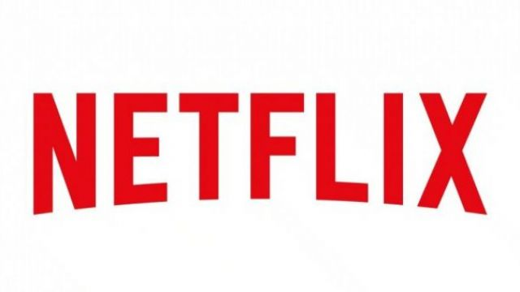

About Netflix
Netflix, Inc. is an American over-the-top media services provider, headquartered in Los Gatos, California. Founded in 1997 by Reed Hastings and Marc Randolph in Scotts Valley, California, the company's primary business is its subscription-based streaming service, which offers online streaming of a library of films and television programs including those produced in-house.
History of Netflix
Netflix's initial business model included DVD sales and rental by mail, although Hastings jettisoned DVD sales about a year after Netflix's founding to focus on the DVD rental business. In 2007, Netflix expanded its business with the introduction of streaming media, while retaining the DVD and Blu-ray rental service. The company expanded internationally, with streaming made available to Canada in 2010 and continued growing its streaming service from there; by January 2016, Netflix services operated in over 190 countries – it is available worldwide except Mainland China, Syria, North Korea and Crimea.
Netflix entered the content-production industry in 2012, debuting its first series, Lilyhammer. It has greatly expanded the production of both film and television series since then, offering Netflix Original content through its online library of films and television. Netflix released an estimated 126 original series or films in 2016, more than any other network or cable channel.